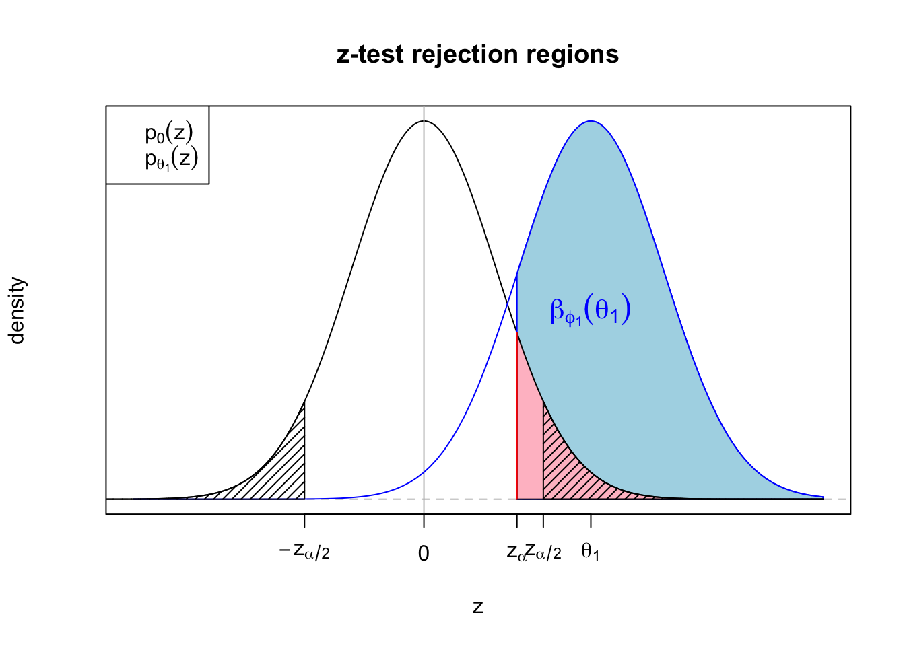
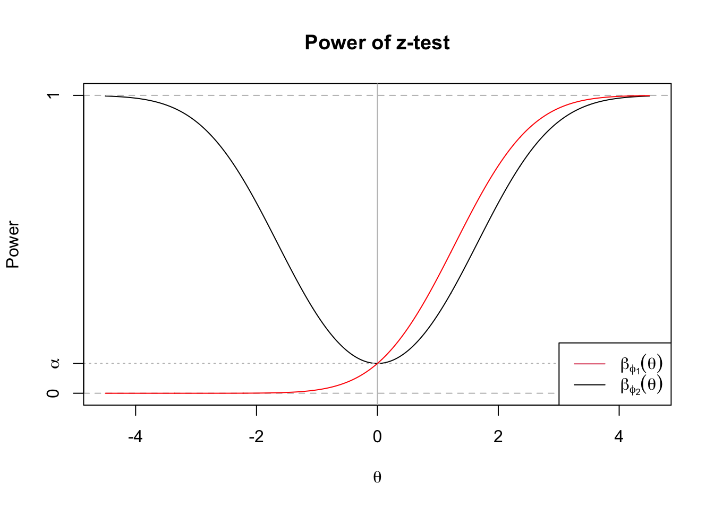
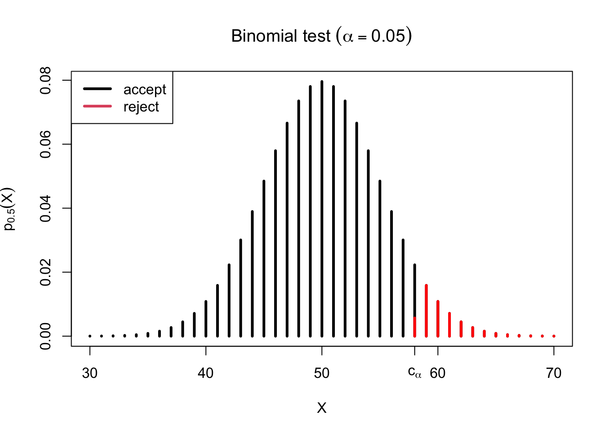

Hypothesis Testing and the Neyman-Pearson Lemma
\[ \newcommand{\cB}{\mathcal{B}} \newcommand{\cF}{\mathcal{F}} \newcommand{\cN}{\mathcal{N}} \newcommand{\cP}{\mathcal{P}} \newcommand{\cX}{\mathcal{X}} \newcommand{\EE}{\mathbb{E}} \newcommand{\PP}{\mathbb{P}} \newcommand{\RR}{\mathbb{R}} \newcommand{\ZZ}{\mathbb{Z}} \newcommand{\td}{\,\textrm{d}} \newcommand{\simiid}{\stackrel{\textrm{i.i.d.}}{\sim}} \newcommand{\simind}{\stackrel{\textrm{ind.}}{\sim}} \newcommand{\eqas}{\stackrel{\textrm{a.s.}}{=}} \newcommand{\eqPas}{\stackrel{\cP\textrm{-a.s.}}{=}} \newcommand{\eqmuas}{\stackrel{\mu\textrm{-a.s.}}{=}} \newcommand{\eqD}{\stackrel{D}{=}} \newcommand{\indep}{\perp\!\!\!\!\perp} \DeclareMathOperator*{\minz}{minimize\;} \DeclareMathOperator*{\maxz}{minimize\;} \DeclareMathOperator*{\argmin}{argmin\;} \DeclareMathOperator*{\argmax}{argmax\;} \newcommand{\Var}{\textnormal{Var}} \newcommand{\Cov}{\textnormal{Cov}} \newcommand{\Corr}{\textnormal{Corr}} \]
1 Hypothesis Testing
Assume we have a larger model \(\cP = \{P_\theta: \theta \in \Theta\}\) (which, as usual, may be “nonparametric” if \(\theta\) is an infinite-dimensional object like a density), and two competing hypotheses about where \(\theta\) lies:
Null hypothesis: \(H_0: \theta \in \Theta_0\)
Alternative hypothesis: \(H_1: \theta \in \Theta_1\)
These hypotheses should be disjoint, meaning \(\Theta_0 \cap \Theta_1 = \emptyset\), and exhaustive, meaning \(\Theta_0 \cup \Theta_1 = \Theta\). Sometimes \(\Theta_0\) is specified and \(\Theta_1\) is left unspecified; in that case you can assume \(\Theta_1 = \Theta \setminus \Theta_0\).
A few examples to have in mind:
Example 1 (Gaussian summary statistic, a.k.a. \(Z\)-test): We observe \(Z \sim N(\theta,1)\) (which is commonly a summary statistic \(Z(X)\) from a large data set) and we want to draw an inference about \(\theta\). Two common hypothesis testing settings are the one-sided hypotheses \(H_0:\; \theta \leq \theta_0\) vs \(H_1:\; \theta > \theta_0\) and the two-sided hypotheses \(H_0:\; \theta = \theta_0\) vs \(H_1:\; \theta \neq \theta_0\).
Example 2 (Two-sample nonparametric testing): We observe two samples, \(X_1,\ldots,X_n \simiid P\) and \(Y_1,\ldots,Y_m \simiid Q\), independently of each other. Without making any further assumptions about \(P\) and \(Q\), we want to test the nonparametric hypotheses \(H_0:\; P = Q\) vs \(H_1:\; P \neq Q\).
A hypothesis is called simple if it fully specifies the data distribution, and composite otherwise. In the examples above, the point null hypothesis \(H_0:\; \theta = \theta_0\) is a simple hypothesis, and the other five are composite.
We’d like to use the data \(X\sim P_\theta\) to determine which of \(H_0\) or \(H_1\) is true, but if a statistician has been called in then this is usually not possible through pure deductive reasoning. For example, if the distributions \(P_\theta\) all have the same support, then any data set \(X\) we see is logically consistent with any value of \(\theta\) in the parameter space.
As usual, we have two options to get around this problem: we can beg the question (the Bayesian approach) or change the subject (the frequentist approach). The Bayesian answer to this problem is clean and simple: just calculate the posterior probabilities \(\Lambda(\Theta_0 \mid X) = \PP(\theta \in \Theta_0 \mid X)\) and \(\Lambda(\Theta_1 \mid X) = \PP(\theta \in \Theta_1 \mid X)\).
But there are a variety of settings where this is regarded as unappealing: scientists, drug companies, and others often work very hard to design carefully controlled experiments where the only stochastic assumptions made are ones that very few people would disagree with, and we’d like to be able to analyze the data from those experiments without having to layer on any further assumptions.
The frequentist approach to this conundrum is to replace inductive reasoning with inductive behavior: we will come up with a decision rule to decide between the two hypotheses based on the data. Formally, we can say we will either
Reject \(H_0\) (conclude that \(H_0\) is implausible and \(H_1\) must be true), or
Accept \(H_0\) (go on believing \(H_0\)).
There is a basic asymmetry here in that \(H_0\) is privileged as the default choice to be disconfirmed, or else corroborated. An analogy is often drawn to a criminal trial where the defendant is innocent until proven guilty.
In reality, of course, our credence in the null (or alternative) hypothesis should be continuous in the evidence that we observe; it would be ridiculous to flip from 100% belief in the null to 100% belief in the alternative just at the point where a normal random variable crosses some threshold. But there are real-world situations in which a dichotomous decision must be made. For example, should the FDA approve a drug, or not? Or, do we need to control for some variable in our experimental setup, or not? Still, it is helpful to retain some critical distance from the conceit that we are ever really dichotomously “rejecting” or “accepting” either hypothesis in an epistemic sense.
In many settings where hypothesis testing is applied, including the examples of two-sided \(Z\)-testing and two-sample nonparametric testing above, there will always be points in the alternative hypothesis that explain the data even better than the null hypothesis does. As a result, even if we accept the conceit of making a dichotomous decision about what to “conclude,” it is implausible that we would ever “accept” \(H_0\) in the sense of regarding \(H_1\) as disconfirmed, even in an approximate sense. As a result, it is usually preferable to say that we “fail to reject \(H_0\)” rather than saying we accept it. Though we will continue to use “accept” as a technical term in what follows, “fail to reject” has less risk of inadvertently misleading non-statisticians.
2 The critical function
We can describe a test by its critical function (a.k.a. test function):
\[ \phi(x) = \begin{cases} 0 & \text{accept } H_0 \\ \gamma \in (0,1) & \text{reject w.p. } \gamma \\ 1 & \text{reject } H_0 \end{cases} \]
The option of randomizing our test by taking \(\phi(x) \in (0,1)\) for some values \(x \in \cX\) is helpful in theory, as we will see shortly, but it is hardly ever done in practice. A non-randomized test \(\phi\) partitions \(\cX\) into the rejection region \(R = \{x \in \cX: \phi(x) = 1\}\) and the acceptance region \(A = \{x \in \cX:\; \phi(x) = 0\}\).
Most tests are defined by choosing a real-valued test statistic \(T(X)\) and rejecting when \(T(X)\) is above some critical threshold \(c \in \RR\). We say \(\phi\) rejects for large \(T(X)\) if \[ \phi(x) = \begin{cases} 0 & T(x) < c\\ \gamma \in (0,1) & T(x) = c \text{ (if } \phi \text{ is randomized)} \\ 1 & T(x) > c \end{cases} \] Much of the art in designing a hypothesis test is in choosing a test statistic \(T(X)\) that is as effective as possible at discriminating between \(H_0\) and \(H_1\)
2.1 Significance level and power
In carrying out a test, there are two types of errors that we can make: a Type I error (sometimes called a false positive) is when \(H_0\) is true, but we reject it, and a Type II error (sometimes called a false negative) is when \(H_0\) is false but we fail to reject it. One way to remember which is which is that the Type I error rate is of primary importance in deciding when to reject, and the Type II error rate is of secondary importance. Our usual goal, informally, is to make the probability of a Type II error under \(H_1\) as small as we can, while controlling the Type I error rate below a prespecified value \(\alpha \in [0,1]\). Note that if \(H_0\) and \(H_1\) are composite, we cannot necessarily speak of “the” Type I or Type II error rate, as it may depend on exactly which of the null or alternative parameter values we sample under.
The behavior of the test is fully summarized by the power function \(\beta(\theta) = \mathbb{E}_\theta[\phi(X)] = \PP_\theta(\text{Reject } H_0)\). In terms of this power function, our goal can be formally stated as \[ \maxz_\phi \beta_\phi(\theta) \text{ for } \theta \in \Theta_1 \quad \text{ subject to } \beta_\phi(\theta) \leq \alpha \text{ for } \theta \in \Theta_0. \] We say \(\phi\) is a level-\(\alpha\) test if \(\sup_{\theta\in\Theta_0} \beta_\phi(\theta) \leq \alpha\). If this supremum is strictly below \(\alpha\), we say the test is conservative. A very common choice for \(\alpha\) is \(0.05\); this began with a somewhat offhand remark by Ronald Fisher in his work when he introduced hypothesis testing, that he sometimes liked to use \(0.05\) in his scientific work. It has become “the most influential offhand remark in the history of science,” according to Brad Efron at Stanford.
If \(H_0\) is composite, this optimization problem has multiple constraints, and if \(H_1\) is composite it has multiple objectives. A major question for the remainder of this lecture is whether we can find a test \(\phi^*\) that optimizes all objectives at once.
2.2 Example: the \(Z\)-test
A very common setting is that we observe some statistic \(Z(X) \sim N(\theta, 1)\), very often a summary statistic from a larger data set. If we are testing the one-sided hypothesis we might use the right-tailed test \(\phi_1(z) = 1\{z > z_\alpha\}\) that rejects for large values of \(Z\). Here \(z_\alpha = \Phi^{-1}(1-\alpha)\) is the upper \(\alpha\) quantile of the \(N(0,1)\) distribution, and \(\Phi(z)\) is the standard normal cdf.
If we want to test the two-sided hypothesis we might use the two-tailed test \(\phi_2(z) = 1\{|z| > z_{\alpha/2}\}\). Now we are rejecting for large values of the test statistic \(|Z|\). The rejection regions for these tests at level \(\alpha = 0.1\) are plotted below, along with the alternative distribution when \(\theta = 2.3\). The shaded blue region shows the power of the test under the alternative.
The two tests’ power functions are plotted below for \(\alpha = 0.1\).

The power functions for both tests intersect the vertical axis \(\theta=0\) at \(\alpha\), but the right-tailed test’s power function remains below \(\alpha\) for all \(\theta < 0\) as well. Note that the right-tailed test is actually a valid test for the two-sided hypothesis, but we would be unlikely to want to use it since it has even less than \(\alpha\) power to reject for negative values of \(\theta\). But this may give us a hint that it will not be possible to maximize power throughout the alternative, because the two-tailed test is in fact losing out to the right-tailed test when \(\theta > 0\).
For the one-sided hypothesis testing problem, however, we might hold out hope that the right-tailed test is the best for all values in the alternative (all \(\theta > 0\)), and indeed it is.
3 Optimal testing
3.1 Likelihood Ratio Test
\[ \newcommand{\LR}{\textnormal{LR}} \]
To begin thinking through optimality of a test, we will start with the simplest sort of hypothesis testing problem: a test of a simple null \(H_0:\; X\sim P_0\) against a simple alternative \(H_1:\; X \sim P_1\). Without loss of generality, assume that \(P_0\) and \(P_1\) have densities \(p_0\) and \(p_1\) with respect to a common dominating measure \(\mu\) (such a measure always exists since we could take \(\mu = P_0 + P_1\)).
The optimal level-\(\alpha\) test in this setting is the one that rejects for large values of the likelihood ratio statistic \[\LR(X) = \frac{p_1(X)}{p_0(X)}.\] That is, our test will be of the form \[ \phi(x) = \begin{cases} 1 & \text{if } \LR(x) > c \\ \gamma & \text{if } \LR(x) = c \\ 0 & \text{if } \LR(x) < c \end{cases}, \] where \(c > 0\) and \(\gamma \in (0,1)\) are chosen to make \(\EE_0 \phi(X) = \alpha\) exactly.
To gain intuiion for why this is the right test, recall that the power of a test with rejection region \(R\) is \(\int_R p_1(x) \,d\mu(x)\), while the Type I error budget is \(\int_R p_0(x)\,d\mu(x)\). If the sample space were discrete, both integrals would just be sums over \(x \in R\), and we should construct a rejection region \(R\) by collecting sample points for which we can buy us the most power \(p_1(x)\) per unit of error budget \(p_0(x)\) that we must spend. In short, \(p_1(x)\) is the “bang” we get out of including \(x\) in the rejection region, and \(p_0(x)\) is the “buck” we must spend. The likelihood ratio statistic \(\LR(x)\) is the ratio representing the “bang for our buck.”
Theorem (Neyman–Pearson lemma): The likelihood ratio test \(\phi^*\) with \(\EE_0 \phi(X) = \alpha\) maximizes power among all level-\(\alpha\) tests of \(H_0:\; X \sim P_0\) vs \(H_1:\; X \sim P_1\).
For purposes of defining likelihood ratio tests, we use the convention that \(\LR(x) = \infty\) if \(p_1(x) > p_0(x) = 0\) (including such points in the rejection region buys us additional power for free), and \(\LR(x)\) is undefined if \(p_0(x)=p_1(x)=0\) (since such points never come up under the null or the alternative).
Proof: We are attempting to show \(\phi^*\) solves the maximization problem \[ \maxz \int \phi(x)p_1(x)\,d\mu(x) \quad \text{s.t. } \int \phi(x)p_0(x)\,d\mu(x) \leq \alpha. \]
The Lagrange form is:
\[ \begin{aligned} \mathcal{L}(\phi; \lambda) &= \int\phi(x) p_1(x)\,d\mu(x) - \lambda\int \phi(x) p_0(x) \,d\mu(x) \\ &= \int \phi(x) \left(p_1(x) - \lambda p_0(x)\right)\,d\mu(x)\\ &= \int \phi(x) \left(\frac{p_1(x)}{p_0(x)} - \lambda\right)\,dP_0(x)\\ \end{aligned} \] If we want to maximize this expression over all functions \(\phi:\; \cX \to [0,1]\), it is clear we should take \(\phi(x)\) as large as possible when \(\LR(x)-\lambda > 0\) (since the integrand is positive), and as small as possible when \(\LR(x) - \lambda < 0\) (since the integrand is negative). The best values are attained at the boundary points \(\{0,1\}\). Note it does not actually matter in this formulation what \(\phi(x)\) is when \(\LR(x)=c\), so any test with \(\phi(x) = 1\) when \(\LR(x) > \lambda\) and \(\phi(x) = 0\) when \(\LR(x) < \lambda\) solves this Lagrange form. As a result we see that our proposed test \(\phi^*\) maximizes the Lagrangian for \(c = \lambda\).
Next, consider any other test \(\phi(x)\) with \(\EE_0\phi(X) \leq \alpha\). We have \[ \begin{aligned} \EE_1\phi(X) &\leq \EE_1\phi(X) - c(\EE_0\phi(X) - \alpha)\\ &\leq \EE_1\phi^*(X) - c(\EE_0 \phi^*(X) - \alpha)\\ &= \EE_1\phi^*(x), \end{aligned} \] where the first inequality comes from the assumption \(\EE_0\phi(X) \leq \alpha\), the second comes from the fact that \(\phi^*\) maximizes the Lagrangian at \(\lambda = c\), and the last from our assumption \(\EE_0\phi(X) = \alpha\).
To ensure the condition \(\EE_0\phi(X) = \alpha\), we use threshold \(c_\alpha\), the upper-\(\alpha\) quantile of the distribution of \(\LR(X)\). Where the randomization parameter \(\gamma\) comes in is that the likelihood ratio statistic may be discrete, in which case we could have \[ \PP_0 (\LR(X) > c_\alpha) < \alpha \leq \PP_0(\LR(X) \geq c_\alpha. \] In that case, we can “top off” our error budget at \(\alpha\) by setting \[ \gamma = \frac{\alpha - \PP_0(\LR(X) > c)}{\PP_0(\LR(X) = c)}. \]
3.2 Example: Binomial
To give a sense of how this works, suppose that we observe a binomial random variable measuring the same-side bias of some human coin flipper \[ X \sim \text{Binom}(n,\theta) = \binom{n}{x}\theta^x(1-\theta)^{n-x}, \text{ for } x=0,1,\ldots,n. \] Inspired by the Diaconis, Holmes, and Montgomery paper, we want to test \(H_0:\; \theta = 0.5\) vs \(H_1:\;\theta = 0.51\). The Neyman–Pearson lemma tells us to use the likelihood ratio: \[ \LR(X) = \frac{p_{0.51}(X)}{p_{0.5}(X)} = \frac{0.51^X 0.49^{n-X}}{0.5^n} = \left(\frac{0.49}{0.5}\right)^n\left(\frac{0.51}{0.49}\right)^X \] We know that the most powerful test \(\phi^*(X)\) rejects for large \(\LR(X)\), but because \(\LR(X)\) is a strictly increasing function of \(X\), this is completely equivalent to rejecting for large \(X\). Thus, the optimal test will reject when \(X\) is larger than its upper-\(\alpha\) quantile \(c_\alpha\) under sampling from the simple null \(P_{0.5}\).
If we choose some value like \(\alpha = 0.05\) that is not divisible by \(2^{-n}\), there is no way we can hope to get a Type I error rate of exactly \(\alpha\) under the null, because \(p_{0.5}(x) = \binom{n}{x}2^{-n}\). To fill our Type I error rate budget, we would then need to randomize at the rejection boundary.
For example, if \(n = 100\) and \(\alpha = 0.05\), we will take \(c_\alpha = 58\), which is the \(0.95\) quantile under the null. But \(\PP_{0.5}(X > 58) = 0.044\) instead of \(0.05\), which is the Type I error rate we asked for. As a result, we randomize at the boundary by setting \[ \gamma = \frac{0.05-0.44}{\PP_{0.5}(X = 58)} = 0.26, \] so \(\phi^*\) rejects with probability \(0.26\) if \(X = 58\). The plot below shows the acceptance and rejection regions of the test on a probability mass function plot of the null distribution, with the bar at \(c_\alpha = 58\) split according to the acceptance and rejection probabilities at the boundary.

In practice, we hardly ever use randomized tests. The conservative test \(\phi^*(X) = 1\{X > 58\}\) is also a likelihood ratio test, and indeed it is the most powerful test at its own level \(0.044\).
What if instead of the alternative \(H_1:\; \theta = 0.51\), we instead read the more recent empirical paper and decided \(H_1:\; \theta = 0.508\) was better? Then, following the same steps as before, the likelihood ratio statistic would be \[ \LR(X) = \left(\frac{0.492}{0.5}\right)^n \left(\frac{0.508}{0.492}\right)^X. \] Just as before, the likelihood ratio is increasing in \(X\), so the test rejects for large values of \(X\). And, just as before, we will set our threshold \((c,\gamma)\) to control the Type I error at \(\alpha\) under \(H_0:\; \theta = 0.5\). Notice that since we have the same test statistic and the same null, we are using exactly the same test. This would be true for any alternative value \(\theta_1 > 0.5\) (but if we used an alternative \(\theta_1 < 0.5\) we would reject for small \(X\)). So we actually have in \(\phi^*\) a test of the point null \(H_0:\theta = 0.5\) against the composite alternative \(H_1:\; \theta > 0.5\), which is simultaneously optimal over all alternative values. A test that achieves maximal power for all values \(\theta \in\Theta_1\) is called uniformly most powerful.
Next we will turn this into a general condition for the same test to be optimal across the entire alternative.
3.3 Uniformly most powerful tests
Definition: We say a test \(\phi^*\) is a uniformly most powerful (UMP) level-\(\alpha\) test of \(H_0\) against \(H_1\) if it is a valid level \(\alpha\) test, and for any other valid test \(\phi\), we have \(\beta_{\phi^*}(\theta) \geq \beta_\phi(\theta)\) for all \(\theta \in \Theta_1\).
In the binomial example above, the reason we found a UMP test is that the likelihood ratio statistic was increasing in \(X\) no matter what alternative we chose, so the optimal thing to do was always to reject for large \(X\). We now generalize this condition:
Definition: We say \(\cP = \{P_\theta:\; \theta \in \Theta \subseteq \RR\}\) has monotone likelihood ratios (MLR) in the statistic \(T(X)\) if \(p_{\theta_2}(x)/p_{\theta_1}(x)\) is a non-decreasing function of \(T(x)\), for any pair of parameter values \(\theta_1 < \theta_2\).
In a family with monotone likelihood ratios, one-tailed tests are UMP for one-sided testing problems:
Theorem: Assume that \(\cP\) has MLR in \(T(X)\), and consider testing \(H_0:\;\theta \leq \theta_0\) against \(H_1:\; \theta > \theta_0\), for some \(\theta_0 \in \Theta \subseteq \RR\). If \(\phi^*(X)\) rejects for large \(T(X)\), then \(\phi^*\) is UMP at level \(\alpha = \EE_{\theta_0}\phi^*(X)\).
Proof: Consider any other level-\(\alpha\) test \(\phi\), and any \(\theta_1 > \theta_0\). We know that \(\phi\) is also a valid level-\(\alpha\) test of the simple null \(H_0:\; \theta=\theta_0\) vs the simple alternative \(H_1:\; \theta=\theta_1\), and so is \(\phi^*(X)\) by assumption. Because \(p_{\theta_1}(X)/p_{\theta_0}(X)\) is a non-decreasing function of \(T(X)\), \(\phi^*(X)\) is a likelihood ratio test for this problem, so we have \(\beta_{\phi^*}(\theta_1) \geq \beta_{\phi}(\theta_1)\).
Note further that \(\beta_{\phi^*}(\theta_1) \geq \alpha\) for \(\theta_1>\theta_0\), which we can see by comparing it to the test \(\phi(X) \equiv \alpha\) that ignores the data.
It remains only to show that \(\phi^*\) is a valid level-\(\alpha\) test; we only assumed it controls Type I error at the boundary. Define \(\bar{\phi}(X) = 1-\phi^*(X)\), which rejects for small \(T(X)\) (or equivalently for large values of \(-T(X)\)). Note further that \(\bar{\phi}(X)\) is a level-\((1-\alpha)\) LRT of \(H_0:\;\theta = \theta_0\) vs \(H_1:\; \theta = \theta_1\), for any \(\theta_1 < \theta_0\). As a result, we can conclude that for \(\theta_1<\theta_0\), we have \[1-\alpha \leq \beta_{\bar{\phi}}(\theta_1) = 1-\beta_{\phi^*}(\theta_1),\] completing the proof.
An important group of examples of MLR families is all one-parameter exponential families.
Example (One-parameter exponential family): Consider a size-\(n\) sample from the exponential family \[ X_1,\ldots,X_n \simiid p_\eta(x) = e^{\eta T(x) - A(\eta)}h(x) \] Then, for any \(\eta_1 <\eta_2\), the likelihood ratio for the full sample is \[ \frac{\prod_i p_{\eta_2}(x_i)}{\prod_i p_{\eta_1}(x_i)} = \exp\left\{(\eta_2-\eta_1)\sum_i T(x_i) - n(A(\eta_2) - A(\eta_1))\right\}, \] which is increasing in \(\sum_i T(x_i)\) if \(\eta_2 > \eta_1\) (and otherwise it is decreasing in the same statistic). As a result, any likelihood ratio test will reject for large values of \(\sum_i T(X_i)\).